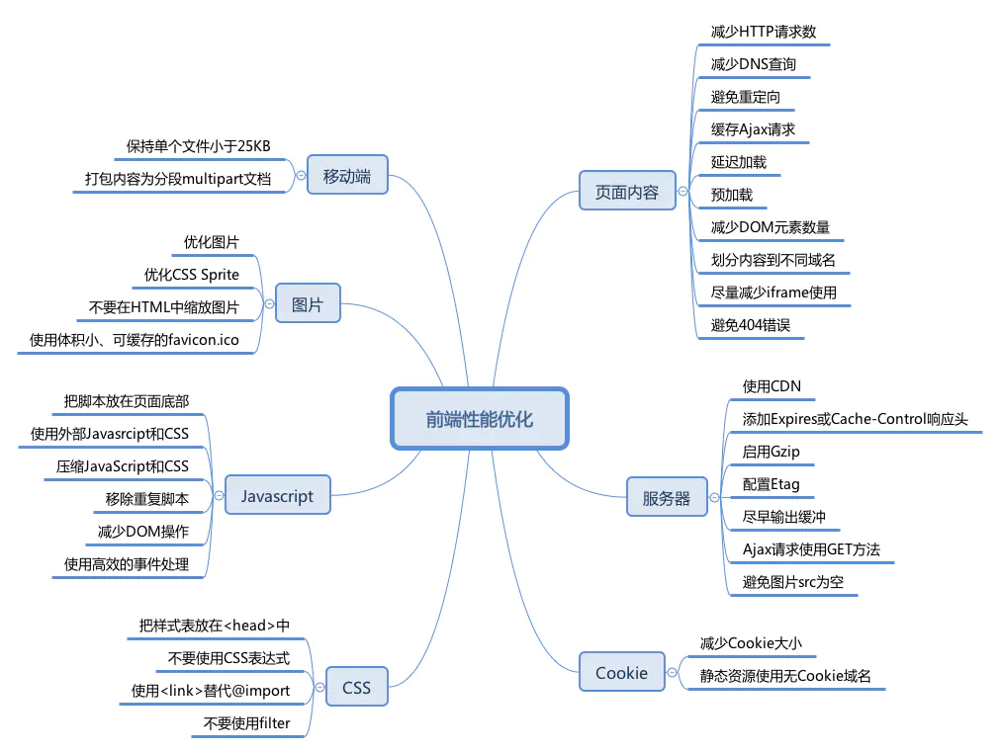

前端性能优化 Posted on 2020-07-07 | In 前端性能优化 | 1、对前端性能优化的基础认知2、网络环境3、加载顺序4、本地存储：常用本地存储api 5、如何评定优化结果和收益SDK 前端性能的一个重要指标是页面加载时间，不仅事关用户体验，也是搜索引擎排名考虑的一个因素。  如何提高网站的速度？ 页面内容（Page Content）服务器（Sever）CookieCSSJavaScript图片（image）移动端（Mobile）参考链接 还在看那些老掉牙的性能优化文章么？这些最新性能指标了解下 Best Practices for Speeding Up Your Web Site Google Best Practices 前端性能优化之雅虎35条军规 司徒正美-用CSS开启硬件加速来提高网站性能（转） Increase Your Site’s Performance with Hardware-Accelerated CSS imooc-Yahoo军规 前端性能优化-基础知识认知 前端性能优化-通用的缓存SDK